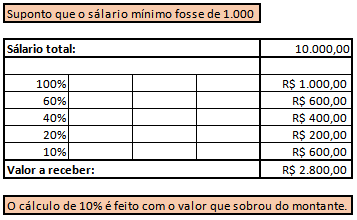
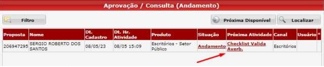
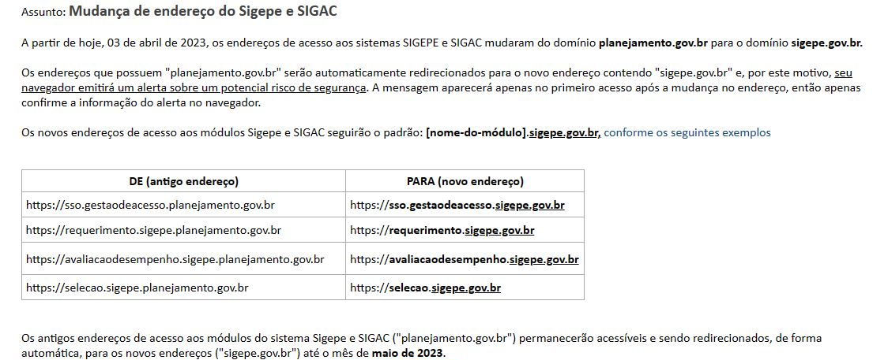
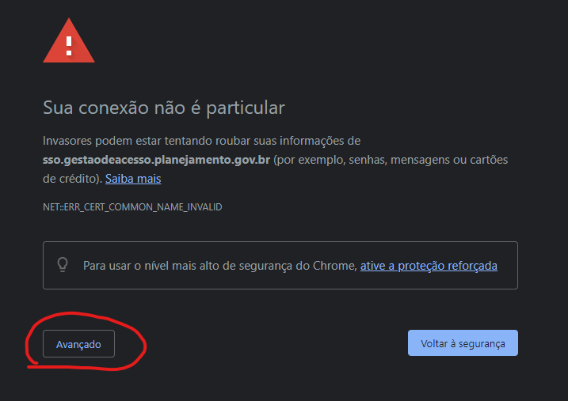
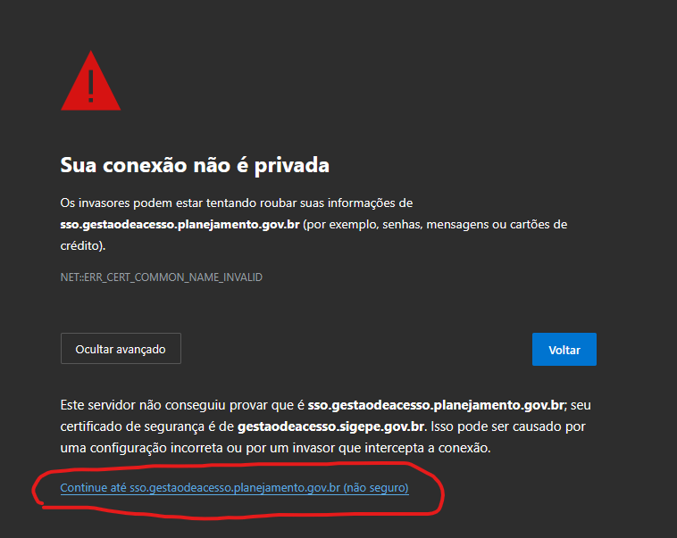
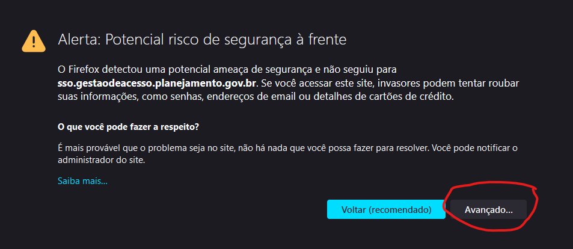
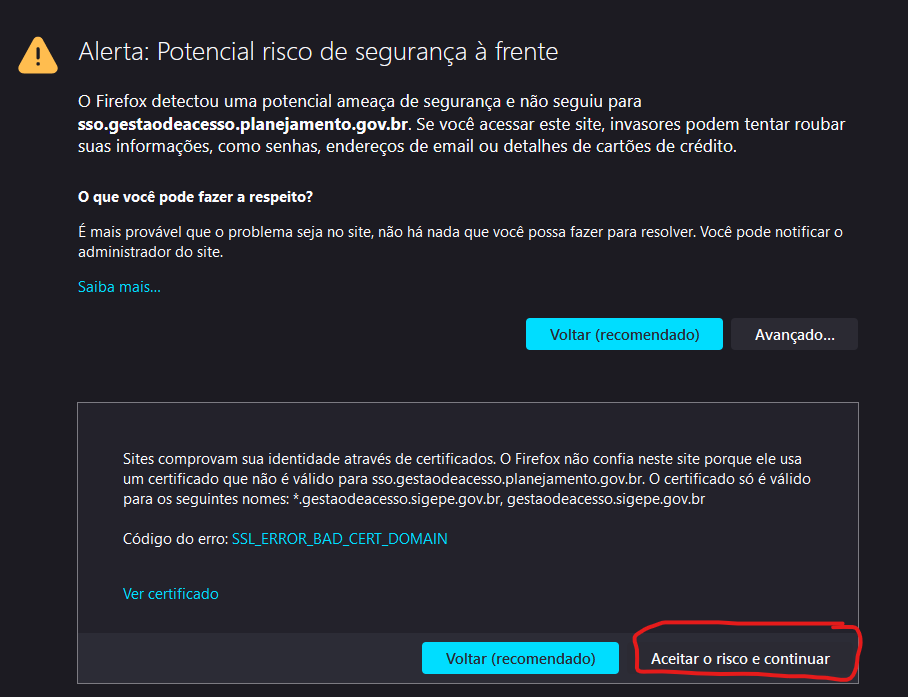
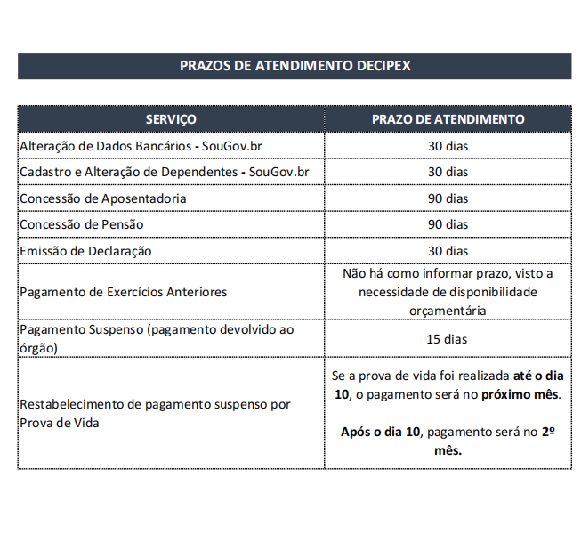
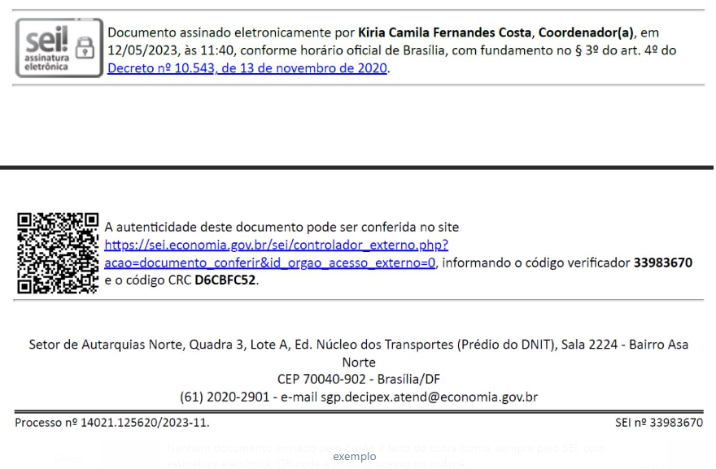

Validação Cadastral

Prezado(a), Usuário(a)
Sua Solicitação foi analisada.
Para prosseguir com sua solicitação de Validação cadastral click no link abaixo e siga as instruçõe:
https://catalogodeservicos.gestao.gov.br/wp-content/uploads/2023/06/Validacao-Cadastral-Ativos.pdf
o prazo estipulado para realização é de 01/06/2023 a 31/07/2023
a validação deverá ser realizada exclusivamente pelo SouGov.br – disponível por aplicativo móvel ou pela página da internet www.gov.br/sougov.
Atenciosamente,
Equipe suporte técnico.
Redução de Benefício
Prezado(a), Usuário(a)
Sua solicitação foi analisada. Segue as informações sobre sua solicitação;
2º Nas hipóteses das acumulações previstas no § 1º, é assegurada a percepção do valor integral do benefício mais vantajoso e de uma parte de cada um dos demais benefícios, apurada cumulativamente de acordo com as seguintes faixas:
I - 60% (sessenta por cento) do valor que exceder 1 (um) salário-mínimo, até o limite de 2 (dois) salários-mínimos;
II - 40% (quarenta por cento) do valor que exceder 2 (dois) salários-mínimos, até o limite de 3 (três) salários-mínimos;
III - 20% (vinte por cento) do valor que exceder 3 (três) salários-mínimos, até o limite de 4 (quatro) salários-mínimos; e
IV - 10% (dez por cento) do valor que exceder 4 (quatro) salários-mínimos.Observação; O cálculo é feito com base no valor do salário mínimo do ano em que ocorreu o falecimento do Servidor.
Atenciosamente,
Equipe suporte técnico.
Cartão de Crédito Consignado
Prezado usuário (a):
O cartão de crédito consignado de benefício é uma modalidade de cartão de crédito com desconto em contra-cheque e benefícios vinculados obrigatoriamente, como descontos em estabelecimentos específicos.
Considerando que o dispositivo inserido na lei ainda será regulamentado pelo governo federal, havendo ainda a necessidade de adequação do sistema de pagamento para que possa ser aplicado, estabelecida proibição de novas consignações quando a soma dos descontos (parcelas deduzidas de forma compulsória da remuneração) e das consignações facultativas alcançar ou exceder o limite de 70% da base do consignado.
Segue o link com mais informações referente ao cartão de crédito consignado de benefício.
https://www.gov.br/gestao/pt-br/assuntos/noticias/2023/maio/reserva-da-margem-consignavel-de-servidores-publicos-para-cartao-de-beneficio-e-restabelecida-por-lei
Atenciosamente,
Equipe suporte técnico.
Atualização Cadastral
Prezado usuário (a):
Sua solicitação foi analisada. Siga os seguintes passos:
O Ministério da Gestão e da Inovação em Serviços Públicos (MGI) abrirá, a partir desta quinta-feira, 1º de junho, o prazo para atualização cadastral obrigatória dos servidores públicos federais. A iniciativa, realizada anualmente, tem por objetivo aprimorar políticas públicas de gestão de pessoas voltadas ao funcionalismo público. Além disso, a atualização dos dados melhora a qualidade e utilidade das informações sobre as pessoas, prestadas à sociedade por meio de painéis, consultas públicas, portais da transparência ou imprensa.
Segue link para Atualização de Dados Cadastrais:
Ativos: https://www.gov.br/servidor/pt-br/acesso-a-informacao/faq/sou-gov.br/atualizacao-cadastral/atualizacao-cadastral
Aposentados: https://www.gov.br/servidor/pt-br/acesso-a-informacao/faq/sou-gov.br/validacao-cadastral-aposentado/validacao-cadastral-aposentado
Equipe: https://www.gov.br/servidor/pt-br/acesso-a-informacao/faq/sou-gov.br/unidade-gestao-de-pessoas-validacao-cadastral-equipe/atualizacao-cadastral-validacao-de-equipe-pelo-lider
Atenciosamente,
Equipe suporte técnico.
Margem 5%
Prezado usuário (a):
Sua solicitação foi analisada. Siga os seguintes passos:
O Ministério da Gestão e da Inovação em Serviços Públicos (MGI) informa que a mudança na Lei nº 14.509/2022, que passou a determinar reserva de 5% do limite da margem consignável para pagar exclusivamente despesas do cartão de benefícios, não prejudicará os servidores públicos que estão com a margem totalmente comprometida.
Pela lei, o total de consignações não pode exceder a 45% da remuneração mensal dos servidores, sendo que 35% da margem é para empréstimos gerais, 5º para amortizar dívidas contraídas com cartão de crédito e 5% para pagar despesas do cartão de benefícios. O uso da margem para o cartão de benefícios, porém, ainda passará por regulamentação, o que inclui a adequação do sistema e regras de transição para quem já está com o total da margem comprometido.
O cartão de ‘crédito consignado de benefício’ é uma modalidade de cartão de crédito com desconto em contracheque e benefícios vinculados obrigatoriamente, como descontos em estabelecimentos específicos, seguros, etc.
“A lei foi aprovada e, portanto, por determinação legal, a gente vai ter que reservar 5% para o cartão de benefícios. No entanto, isso não vai trazer qualquer tipo de prejuízo para quem está com a margem consignada 100 % comprometida porque permanecerá assim até o final do pagamento das parcelas de empréstimo. Com relação ao cartão de benefícios, ele ainda será regulamentado. O que de imediato vai acontecer é a reserva, portanto, agora, de 35% para empréstimos gerais”, explica a secretária substituta de Gestão de Pessoas e Relações de Trabalho do MGI, Meri Lucas.
Atenciosamente,
Equipe suporte técnico.
Solicitar Pecúlio
Usuário informa que deseja saber sobre a sua solicitação do pecúlio. é aposentado pelo INSS.
Prezado (a), Usuário(a)
Sua solicitação foi analisada. Seguir as seguintes orientações: Para mais informações ou dúvidas sobre este serviço, entre em contato. Ligue para a Central de Atendimento do INSS pelo telefone 135.O serviço está disponível de segunda a sábado das 7h às 22h (horário de Brasília).
Este é um serviço do(a) Instituto Nacional do Seguro Social . Em caso de dúvidas, reclamações ou sugestões favor contatá-lo.
Link da Informação: https://www.gov.br/pt-br/servicos/solicitar-peculio
Atenciosamente,
Equipe de suporte tecnico.
Divergência do averbador SERPRO - Proposta SIAPE
Prezado(a), Usuário(a)
sua solicitação foi analisada.
Para esclarecimento sobre o assunto entre em contato com a Unidade de Gestão de Pessoas do seu órgão de vinculação. Caso não saiba a sua, segue o link:
https://www.gov.br/servidor/pt-br/acesso-a-informacao/faq/sou-gov.br/7-localizar-unidade-de-gestao-de-pessoas/2022-localizar-unidade-de-gestao-de-pessoas
Atenciosamente,
Equipe suporte técnico.
Cancelamento de plano Assefaz
Prezado(a), Usuário(a)
Sua Solicitação foi analisada.
Para prosseguir com sua solicitação de cancelamento de plano de saúde do Assefaz click no link abaixo e siga as instruções:
https://catalogodeservicos.gestao.gov.br/servicos/solicitacao-de-cancelamento-da-plano-de-saude-da-assefaz/
Atenciosamente,
Equipe suporte técnico.
Mudança no endereço do SIGEPE
Chrome/EDGE: Mensagem de Alerta!
Clicar no botão “Avançado”
Clicar na URL listada ao final do texto. Firefox: Mensagem de Alerta!


Atenciosamente,
Equipe suporte técnico.
Datas de fechamento de folha - contra-cheque
Prezado (a), Usuário(a)
Sua solicitação foi analisada:
Para nível de conhecimento segue datas previstas para fluxo folha de pagamento, tendo em vista que as datas podem ser alterada de acordo com o dia útil de cada mês.
17- Para fechamento de pagamento 17- Ultimo dia para chefia homologarem férias de junho 18- Homologar lha e consulta contra-cheque 26- Abertura da folha do mês subsequente.
Atenciosamente,
Equipe suporte técnico.
Datas de fechamento de folha - contra-cheque
Fraude recebimento de email - verificação
Prezado (a), Usuário(a)
Sua solicitação foi analisada.
Quando enviamos Ofício, ele é gerado dentro do SEI, com QR code de verificação de autenticidade e há menção ao processo vinculado.
Nenhum documento enviado pelo órgão é feito de outra forma, sempre pelo SEI, com assinatura eletrônica, QR code e nº do processo no rodapé:
Atenciosamente,
Equipe suporte técnico.
Script - Central Sipec (Não competência)
OBS: Como as demandas serão registradas e respondidas, no sistema, o atendente, na medida do possível, poderá pesquisar sobre o assunto e complementar a resposta acima.
Prezado (a), Usuário(a)
Sua solicitação foi analisada.
Informamos que a Central de Atendimento SIPEC, serviço disponibilizado pela Secretaria de Gestão de Pessoas e Relações do Trabalho, tem por objetivo esclarecer dúvidas, dos servidores ativos, aposentados e pensionistas, relacionadas à operacionalização dos serviços oferecidos pelos sistemas Sigepe/Sigac e SouGov.
De todo modo, quanto ao assunto localizamos as seguintes informações:
Atenciosamente,
Equipe suporte técnico.
Fique por dentro!

Houve falha no certificado Santander desde 28/06 para realização de PROVA DE VIDA. em casos de ligações solicitar:
Nome Completo:
CPF:
Agência e Baco em que compareceu:
Nome do Atendente:
Atualizado em 11/07/2023